[1] 421.7759 185.2152 321.6069 221.8225 284.4739Sampling I
Population and Sample
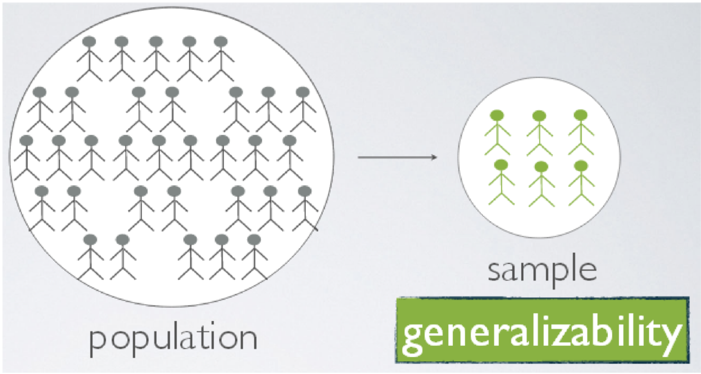Define 1) census, 2) sample, and 3) sampling?
Population and Sample
To use a sample to describe a ‘population’ is called what?
Definitions
- Census?
- Complete enumeration of the population (i.e., the whole)
- What is a sample?
- The act, process, or technique of selecting a representative part of a population for the purpose of determining parameters or characteristics of the whole population
- What is sampling?
- Selection of a part of a population to be used to estimate characteristics of the population
- To make inference about the population from a part, i.e., the sample.
Sampling Types
- Convenient sampling - when most convenient units are chosen
- Judgment sampling - obtained at the discretion of someone who is familiar with the characteristics of the population
- Probability sampling - based on a process that the probability a unit is selected is known
Central paradox of Sampling
Impossible to know from a sample whether it is representative
We rely on the process, not the outcome.
Why Sample?
- Large populations are physically prohibitive to census
- Fiscally prohibitive to census
- Timeliness
- Observing might be destructive. For example?
Common Sample Units
- plots/quadrats - small area to measure/count plants, seeds, insects, etc.
- points - measurements are taken from a set of points established throughout a population
- transects - line segments in which observations are taken from
- individual organisms - the organism is the sample unit or the organism defines the location of the sample unit
Population and Sample
- Trees of sufficient size for nesting by spotted owls
- House characteristics that northern flickers most often damage
- Survival of rainbow trout in the presence of whirling disease
- Surveys, e.g., number of people that
- bird watch / hunt / fish / think wolves should live in CO
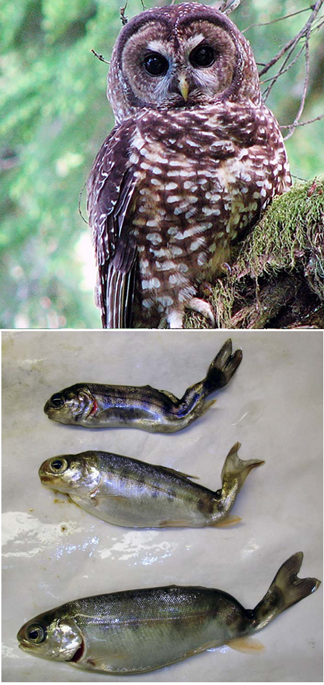
Population and Sample
Often a spatial/temporal context to our target population
Population and Sample
Title: Muskrat occurrence in Rhode Island shows little evidence of land use change driving declines
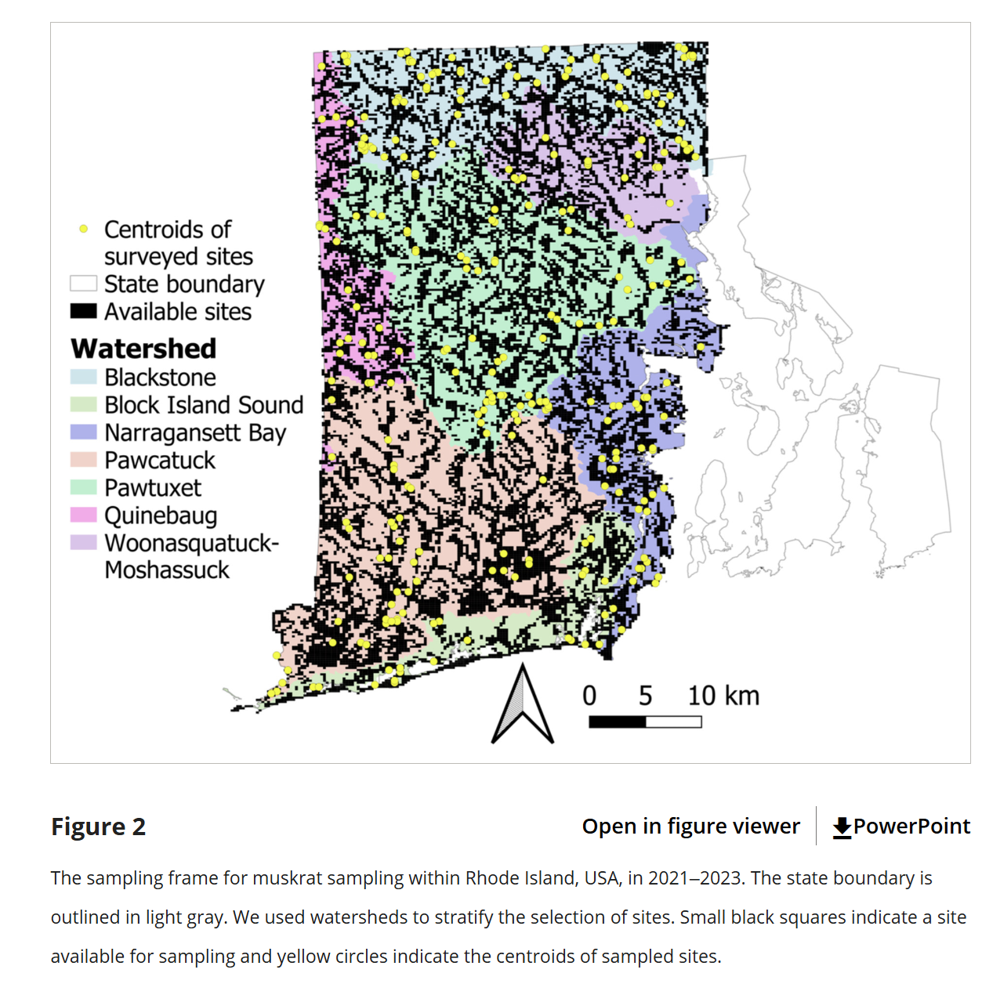Population and Sample
Title: Land cover attributes affect the distribution of rooting damage by wild pigs (Sus scrofa)
- Surveys within 1) The Savannah River Site (green) 2) Newberry County (blue), 3) Hampton County (red)
- “We generated 9 random points to act as the center of respective 200-ha survey grids”.
- “Properties were primarily composed of mixed agricultural-forested cover”.
Thinking Backwards
People often think backwards from what data they have to identify the Population.
E.g., Nesting shorebirds are censused each summer at a handful of beaches.
Can we use these sites as samples to apply to all beaches in the area?
Design vs. Sampling
- Experimental Design:
- Deliberately perturbing a part of a ‘population’ to compare it’s effect to a part that was not perturbed
- Sampling Design:
- The process of obtaining a representative sample to characterize a ‘population’ w/o necessarily perturbing it.
Design- vs Model-based Infernce
What are important differences according to Thompson and Hankin et al.?
Benefits or costs of either?
Important Considerations
- randomness
- fixed
- undefinable infinite superpoulation vs. real target population
Design- vs Model-based Infernce
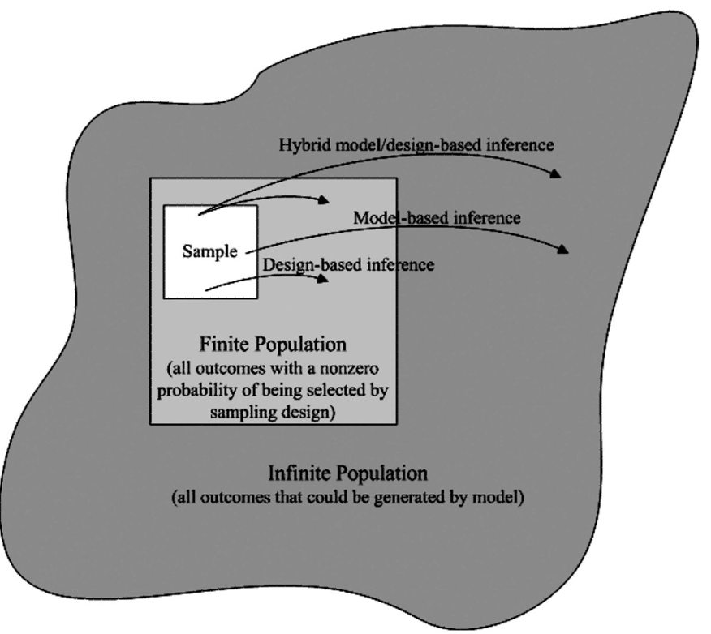Design- vs Model-based Infernce

Sample Language
A sample (height in inches):
\(\textbf{y} = [69, 54, 72, 61, 58, 71]\)
A sample unit:
\(y_{2} =54\)
Sample size:
\(n = 6\)
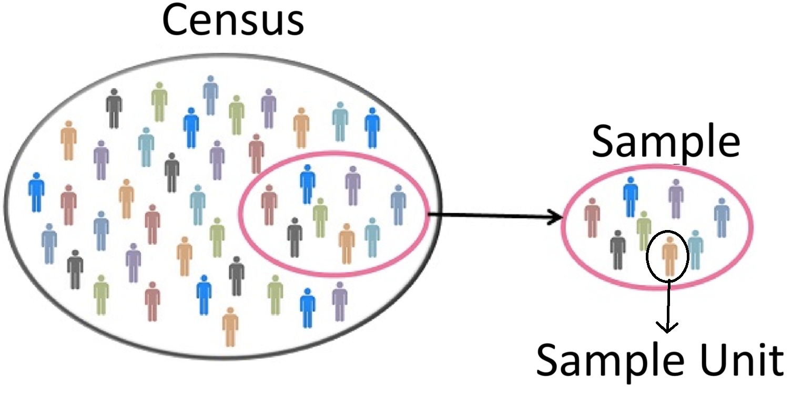
More Language
What is a statistic?
- An estimate of a population parameter from a sample
\[\hat{\mu} = \left(\left(\sum_{i=1}^{n}y_{i}\right)\times \frac{1}{n}\right) = 57.7\]
- \(n\) is a sample parameter (size of sample)
- \(\hat{\mu}\) is an estimate of a population parameter (\(\mu\)) from the estimator (mathematical rule for calculation)
- 57.7 is a statistic (specific value)
More Language
\[\mu =\left(\sum_{i=1}^{N}y_{i}\right)\times \frac{1}{N} = 54\]
- \(\mu\) is a population parameter (measure of central tendency)
- \(N\) is a population parameter (size of all possible sample units)
- \(54\) is the value of the population parameter
Sampling Error
- Sampling Error
- The difference b/w a sample statistic (specific value) and the true value of a population paramter
- 57.7 - 54 = 3.3 (inches) sampling error
- Due solely to incomplete enumeration of the population (chance)
- Protection against this is large sample size
Sampling Variation and Error
Target Population: Weight of all black bears in a region
How would you describe a sampling frame relevant to this target population?
Sampling Variation and Error
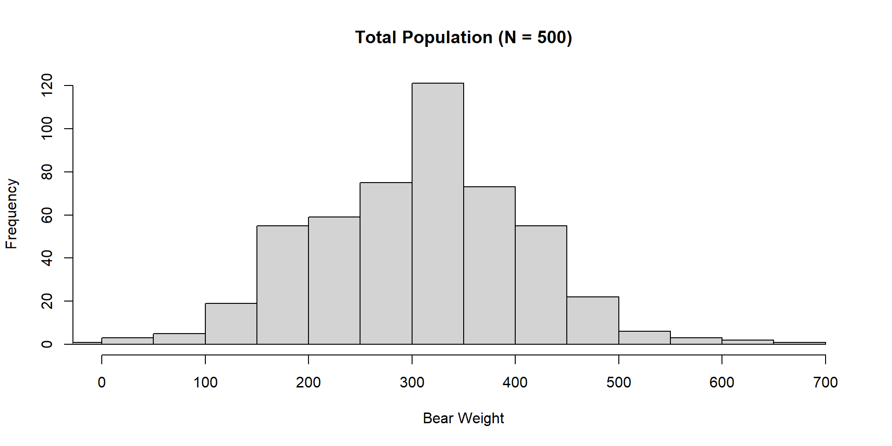Sampling Error
Vector of bear weights
Is this a problem?
Sampling Variation vs Error
Sampling variation is the process and sampling error is an outcome.
The differences between samples (sampling variation) lead to differences between sample statistics and population parameters (sampling error).
Sampling Variation
Calculate many many sample means
Sampling Variation
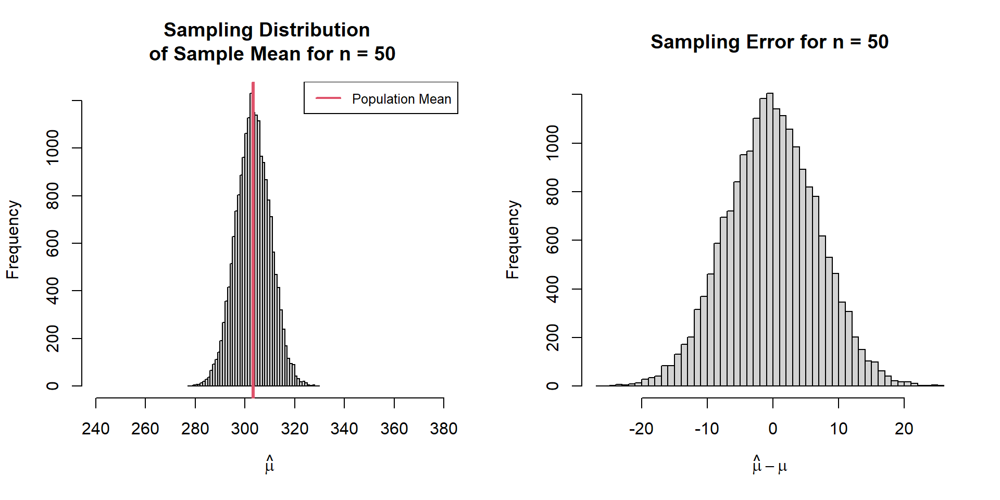Estimator Bias
Expected Bias (of the estimator) = average sample mean - population mean
\[ \text{Bias}(\hat{\mu},\mu) = \bar{\hat{\mu}} - \mu \\ \]
\[ \text{Bias}(\hat{\mu},\mu) = E[\hat\mu] - \mu \\ \]
\[ \text{Bias}(\hat{\mu},\mu) = \left(\int_{x} g(x)p(x|\mu)dx\right) - \mu \]
Expectations are an average over all possible samples of size n.
Is our estimator biased?
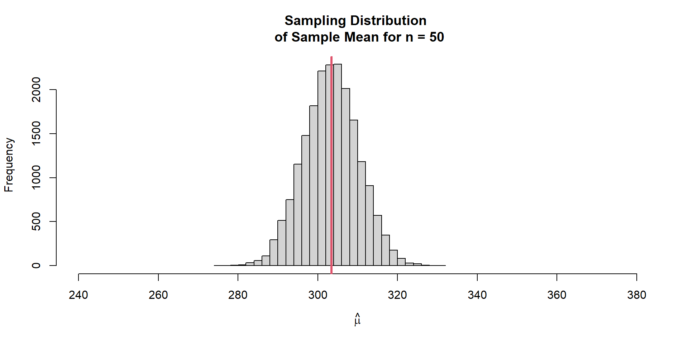Precision
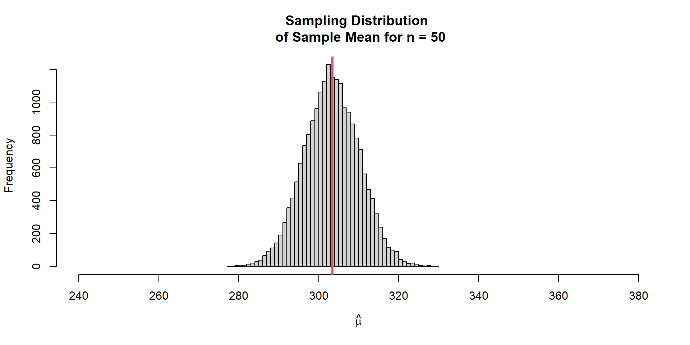How close are repeated measures to each other?
Probability
We can also summarize the sampling variation into a probability
Accuracy
Typically a measure of how close the average sample value is to truth
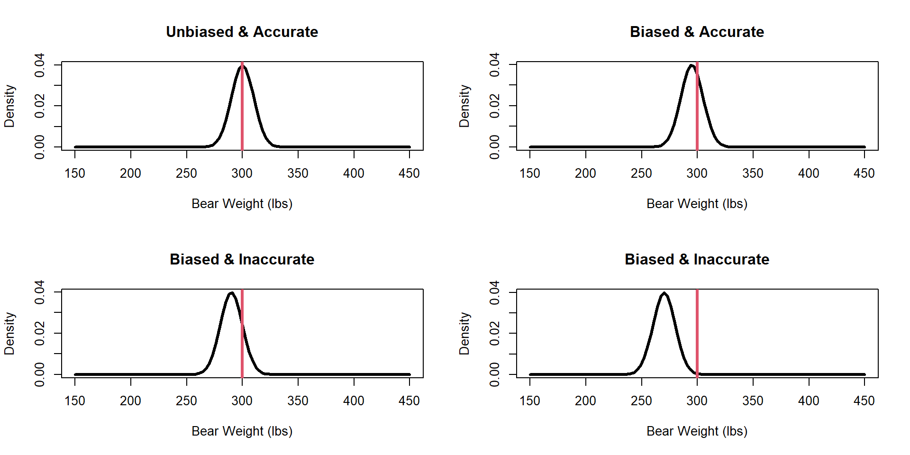Sampling Variation
Which sampling distribution would you prefer?
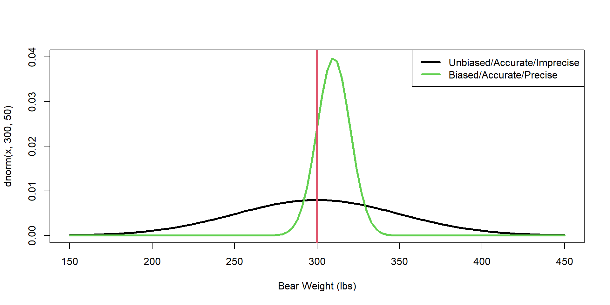Sampling Bias
- Sampling Bias
- Systematic tendency of selecting certain sample units; makes the samples unrepresentative to the target population
- Examples in fish/wildlife??
Sampling Bias
Sample Population: Weight of harvested black bears in a region that allows food provisioning
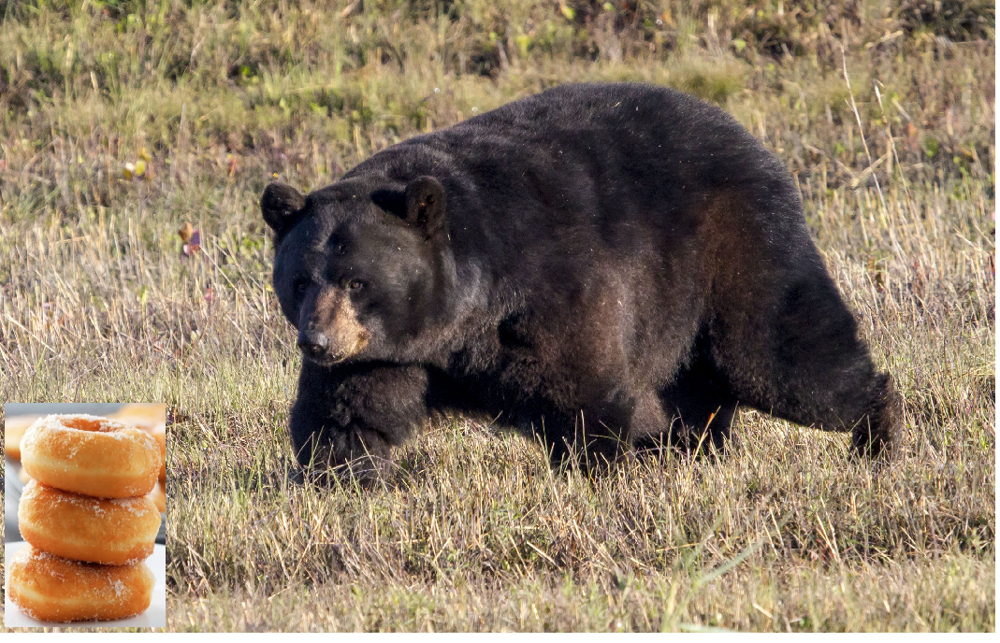Sampling Error and Bias
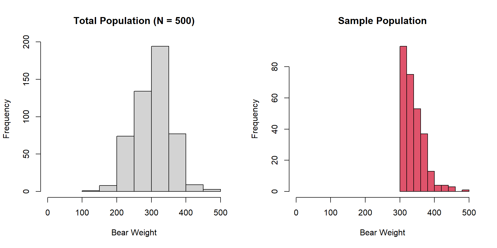Sampling Bias
We only sample harvested bears with food supplementation

Expected Bias = 35.63
Sampling Bias
Relative Expected Bias = \(\frac{E(\hat{\mu})-\mu}{\mu}\)
Relative Expected Bias = 0.12
Biased Estimator
We sample all bears but use a different estimator for the population mean
\[ \hat{\mu} = \left(\sum_{i=1}^{n}(y_{i})^{0.38}\right)\times \frac{1}{n^{1/10000}} \]
Biased Estimator
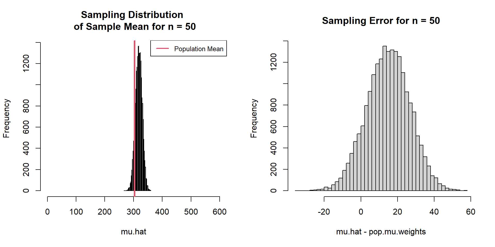Expected Bias = 14.87
Measurement Error
Didn’t zero the scale before weighing; this is not sampling error.
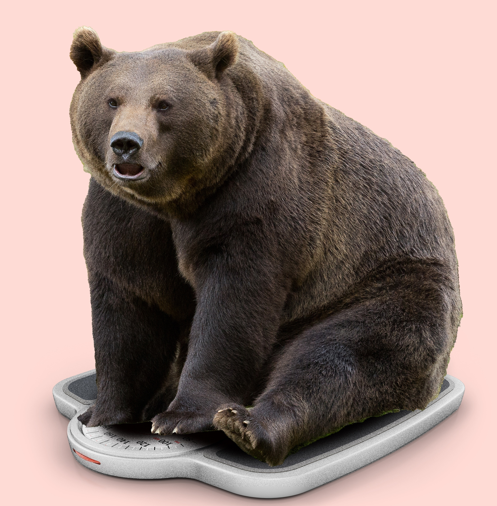Measurement Error
Inaccurate measurements due to malfunctioning instruments or poor procedures or by-product of sampling plan
E.g.,
- In Aspen, CO human-bear conflicts tend to be under reported
- In New Jersey they tend to be over reported